측량및지형공간정보기사 (2004-03-07 기출문제)
1과목: 측지학 및 위성측위시스템
1. 지구의 장반경이 6377.397km, 단반경이 6356.079km일 때 지구의 편평률은 얼마인가?
- 약 300
- 약 1.003
- 약 1/996
- 약 1/299
(정답률: 80%)

2. 다음 중 지구의 공전으로 인하여 생기는 현상은?
- 운동하는 물체에 전향력이 생긴다.
- 1 태양일과 1 항성일이 차이가 난다.
- 조석이 하루에 2번씩 일어난다.
- 인공위성의 궤도가 서편한다.
(정답률: 70%)
3. 구면삼각형에 관한 설명으로 옳지 않은 것은?
- 구면삼각형은 지표상 세 점을 지나는 세 개의 대원을 세 변으로 하는 삼각형이다.
- 구면삼각형에서는 내각의 합이 180° 보다 크다.
- 구면삼각형의 계산에 Legendre의 정리가 널리 사용된다.
- 평면삼각측량에서도 구과량은 무시할 수 없으므로 구면삼각형의 면적 대신 평면삼각형의 면적을 사용해서는 안된다.
(정답률: 79%)
4. 다음 VLBI(Very Long Base-line Interferometry)에 관한 설명로 알맞는 것은?
- VLBI의 기술로는 일반적으로 수십 km이내의 범위에서만 직접 측정이 유효하다.
- VLBI은 반사경이 부착된 위성으로부터 되돌아오는 위상차로 위치를 결정한다.
- VLBI는 전파의 간섭을 이용하는 방법으로 측지분야에 응용하고 있다.
- VLBI의 실용화는 기하측지학에는 큰 영향을 미치지 못한다.
(정답률: 67%)
5. 중앙경간이 2.5km인 현수교의 두 주탑을 연직으로 세우면 두 주탑이 이루는 각도는 약 얼마인가? (단, 중력의 방향은 준거타원체의 법선방향과 일치한다고 가정하고 지구의 반경은 6,370km로 한다.)
- 20초
- 40초
- 81초
- 162초
(정답률: 79%)
6. 지구의 자오선 곡률반경을 M, 횡(묘유선방향)의 곡률반경을 N이라 할 때 평균곡률반경 R은?
- R=M+N/2
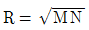
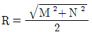
- R=2MN/M+N
(정답률: 79%)
7. 다음 설명 중 잘못된 것은?
- 지구상의 한 점에서 타원체의 법선과 지오이드의 법선이 일치하지 않는 차를 연직선 편차라 한다.
- 태양이 천구상에서 서에서 동으로 진행하는 경로를 황도라 한다.
- 적경은 천구의 적도상에서 춘분점으로부터 동쪽으로 향하여 잰 각거리이다.
- 측지선은 타원체 상에서 두 점을 포함하는 소원의 일부이다.
(정답률: 60%)
8. 지구상의 한점과 지구중심을 맺는 직선이 적도면과 이루는 각은?
- 측지위도
- 천문위도
- 천문경도
- 지심위도
(정답률: 34%)
9. 우리나라의 지형도에서 사용하고 있는 평면좌표는 다음 어느 투영법에 의하는가?
- 등각투영
- 등적투영
- 등거투영
- 복합투영
(정답률: 84%)
10. 3차원좌표계에서 이미 알고 있는 한점의 측지좌표로부터 다른 한점의 측지좌표를 구하고자 할 때 일반적으로 측정이 필요한 값들로 이루어진 것은?
- 거리, 위도, 방위각
- 거리, 위도, 높이
- 거리, 위도, 경도
- 거리, 방위각, 높이
(정답률: 77%)
11. 천구와 관계 없는 것은?
- 천저(nadir)
- 수직권(vertical circle)
- 황도(ecliptic)
- 측지선(geodetic line)
(정답률: 84%)
12. 다음 설명 중 잘못된 것은?
- 항정선(Loxodrome)은 자오선과 항상 일정한 각도를 유지하는 지표의 선이다.
- 묘유선(Prime vertical)은 지평선의 정동(동점) 및 정서(서점)와 천정을 지나는 수직권이다.
- 천문경위도는 기준(또는 준거)타원체 상에서 측지경위도는 지오이드상에서 관측한 값이다.
- 어느 천체를 포함하는 시간권을 따라 적도로부터 그 천체까지 잰 각거리를 적위(Declination)라 한다.
(정답률: 10%)
13. 어떤 지점에서 춘분점의 시간각은 그 지점의 항성시이다. 적경 α 인 별의 시간각 t와 항성시 h와는 α + t = h 의 관계가 있다. 적경 α 시의 천체가 자오선을 통과할 때 그 지점의 항성시는 얼마인가?
- α
- α + 6
- α + 12
- 0
(정답률: 73%)
14. 지각수직변동을 조사하기 위한 측량방법이 아닌 것은?
- 해수위 변동관측
- 수준측량의 재측
- 정밀삼각측량
- 반복중력 관측
(정답률: 15%)
15. 중력보정에 대한 설명으로 옳지 않은 것은?
- 고도(Elevation)보정-지표상의 한점에서 측정된 중력값을 지오이드 면상의 중력값으로 보정하는 것이다.
- 지형(Terrain)보정-지형을 평평하다는 가정을 보정해주는 것으로 그 값은 항상 (-)가 된다.
- 부게(Bouger)보정-측정점과 지오이드면사이에 존재하는 물질이 중력에 미치는 영향에 대한 보정이다.
- 아이소스타시(Isostatic)보정-아이소스타시 지각균형 이론에 의한 보정이다.
(정답률: 82%)
16. 다음중 전파에 의한 위치결정 방식이 아닌 것은?
- 방위선방식
- 포물선방식
- 원호방식
- 쌍곡선방식
(정답률: 75%)
17. 다음 중 자오선에 해당되는 설명으로 맞는 것은?
- 지표상에 있는 두 점간의 최단 거리선이다.
- 지구 중심을 포함하는 임의의 평면과 지표면의 교선을 말한다.
- 적도와 나란한 평면과 지표면의 교선이다.
- 적도와 직교하여 무수히 많다.
(정답률: 42%)
18. 다음 중 천문좌표계가 아닌 것은?
- 지평좌표계
- 적도좌표계
- 황도좌표계
- 3차원 직각좌표계
(정답률: 82%)
19. 다음 중 물리학적 측지학에 해당되지 않는 것은?
- 중력 측정
- 천체의 고도 측정
- 지자기 측정
- 조석 측정
(정답률: 79%)
20. 다음 지자기 측정에 대한 설명 중 틀린 것은?
- 지자기변화에는 주기적 변화와 불규칙 변화가 있다.
- 영년변화는 수백년을 주기로 나타나는 지자기의 변화이다.
- 자기 폭풍은 지진에 의해 발생한다.
- 자기 폭풍은 단파 통신의 지장을 초래한다.
(정답률: 75%)
2과목: 응용측량
21. 경관의 분류중 인식 대상의 주체에 관한 구분으로서 잘못 된 것은?
- 자연 경관
- 인공 경관
- 생태 경관
- 환경 경관
(정답률: 75%)
22. 완화곡선의 설명 중 잘못된 것은?
- 완화곡선의 접선은 시점에서 직선에 종점에서 원곡선에 접한다.
- 원곡선과 직선부 사이에 넣는 특수곡선이다.
- 종류는 클로소이드, 3차 포물선 등이 있다.
- 완화곡선은 편경사(cant)와 무관하다.
(정답률: 77%)
23. 그림과 같은 토지의 단면적을 구하는 공식은? (단, 단면적을 A라 한다)
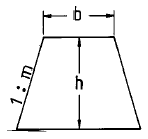
- A=(b+mh)h
- A=(b+m)h
- A=(b+h)h
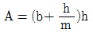
(정답률: 75%)
24. 그림과 같은 종단곡선의 A점에서 가장 높은 지점(crest)까지는 얼마나 떨어져 있는가? (단, 종단곡선은 포물선이고 A점의 계획고는 65.50m)
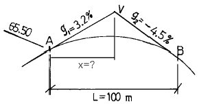
- 41.56m
- 50.00m
- 54.62m
- 246.15m
(정답률: 74%)
25. 다음 하천수위에 대한 정의 중 틀린 것은?
- 평균수위 - 어떤 기간의 관측수위를 합계하여 관측횟수로 나누어 평균값을 구한 수위
- 평균저수위 - 어떤 기간의 평균수위 이하의 수위로부터 구한 평균수위
- 평수위 - 어떤 기간의 수위 중 이것보다 높은 수위와 낮은수위의 관측횟수가 똑같은 수위
- 지정수위 - 홍수시에 지정된 통보를 개시하는 수위
(정답률: 58%)
26. 그림과 같은 계곡에 150m 높이의 댐을 축조하여 140m까지 저수한다면 저수량은 얼마인가? (단, 각 등고선으로 둘러싸인 내부면적은 아래와 같고 각주공식을 이용할 것)
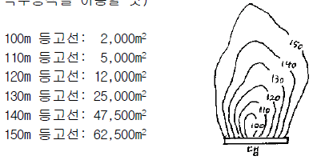
- 525,000m3
- 645,000m3
- 1,011,670m3
- 1,208,300m3
(정답률: 65%)
27. 노선의 곡률반경이 150m이고, 곡선길이가 20m일 때 클로소이드의 매개변수 A의 값은?
- 24.77m
- 34.77m
- 44.77m
- 54.77m
(정답률: 16%)
28. 다음 하천측량의 가장 일반적인 작업순서로 옳은 것은?
- 도상조사→ 현지조사→ 평면측량→ 수준측량→ 유량측량
- 현지조사→ 유량측량→ 도상조사→ 수준측량→ 평면측량
- 도상조사→ 현지조사→ 수준측량→ 평면측량→ 유량측량
- 도상조사→ 현지조사→ 유량측량→ 수준측량→ 평면측량
(정답률: 65%)
29. 클로소이드의 형식은 조합하는 형식에 따라 기본형(基本形), S형, 난형(卵形), 복합형(複合形) 등이 있다. 이중복심곡선 사이에 클로소이드를 삽입한 형식은?
- 기본형(基本形)
- S형
- 난형(卵形)
- 복합형(複合形)
(정답률: 69%)
30. 완화 곡선 중 가장 먼저 곡률 반경이 작아지는 것은?
- 클로소이드
- 렘니스케이트
- 3차포물선
- 2차포물선
(정답률: 67%)
31. 삼각형인 토지의 밑변과 높이를 20.0m의 줄자로 측정하여 면적을 구하였더니 47.15m2 이었다. 그 후에 이 줄자가 20.0m에 10cm가 늘어나 있음을 알았다면 실면적은?
- 47.62m2
- 48.62m2
- 49.62m2
- 50.62m2
(정답률: 70%)
32. 하천측량에서 이점법으로 평균유속을 구할 때 선택해야 할 지점으로 알맞은 것은?
- 수심(H)의 0.2H, 0.8H인 지점
- 수심(H)의 0.4H, 0.6H인 지점
- 수심(H)의 0.3H, 0.7H인 지점
- 수심(H)의 0.5H, 0.9H인 지점
(정답률: 75%)
33. 도상에서 3변의 길이가 각각 20.5cm, 32.4cm, 28.5cm인 삼각형의 실제면적은 약 얼마인가? (단, 축척은 1/500)
- 721,325m2
- 28,853m2
- 7,213m2
- 288m2
(정답률: 40%)
34. 하천측량에서 수위관측소를 설치할 경우 고려할 사항으로 잘못된 것은?
- 관측소의 위치는 그 상하류의 상당한 범위까지 하안과 하상이 안전하고 세굴이나 퇴적이 되지 않아야 한다.
- 상하류의 길이 약 100m 정도의 직선이어야 하고 유속의 변화가 크지 않아야 한다.
- 지천의 합류점 및 분류점으로 수위의 변화가 생기는 곳이어야 한다.
- 평상시에는 홍수때 보다 수위표를 쉽게 읽을 수 있는 곳이어야 한다.
(정답률: 70%)
35. 지표에서 보링을 행하여 단층의 코어를 채취한 결과가 코어 길이가 5.00m, 지표면과 이루는 층의 경사각이 30°이었다. 이때 한층의 실제두께는?
- 2.50m
- 4.33m
- 6.50m
- 8.33m
(정답률: 17%)
36. 경관측량에서 수평시각(水平視角)에 대한 설명중 잘못된 것은 어느 것인가?
- 0° < θH≦10° 사이에서 시설물은 시점이 높은 특이한 시설물 경관이 된다.
- 10° < θH≦30° 에서는 시설물의 전체 형상을 인식할수 있어 경관의 주체로서 적당하다.
- 30° < θH≦60° 에서는 시설물이 시계 중에 차지하는비율이 커서 강조된 경관을 얻는다.
- θH > 60° 이면 시설물 자체가 시야의 대부분을 차지한다.
(정답률: 19%)
37. 단곡선 설치시 교각(I)는 60° , 반경(R)은 300m인 단곡선에서 접선의 길이(T .L)은 얼마인가?
- 150.00m
- 173.21m
- 259.81m
- 519.62m
(정답률: 53%)
38. 교점(I.P.)이 기점으로부터 400m의 위치에 있고, 교각 (I)= 30° , 중심말뚝간격(ℓ)=15m 이라면외할(E)=5.00m라면 시단현의 길이는 약 얼마인가?
- 12.98m
- 17.46m
- 17.84m
- 22.06m
(정답률: 0%)
39. 축척 1/1,000의 도면을 축척 1/500으로 잘못 계산하여 10,000m2의 면적을 얻었다. 정확한 값은 얼마인가?
- 250m2
- 2,500m2
- 20,000m2
- 40,000m2
(정답률: 57%)
40. 터널측량에서 지표 중심선 측량방법과 직접적인 관련이 없는 것은?
- 트랜싯에 의한 직접 측량법
- 트래버스 측량에 의한 측설법
- 레벨에 의한 측설법
- 삼각 측량에 의한 측설법
(정답률: 62%)
3과목: 사진측량 및 원격탐사
41. 수치지형모델(Digital Terrain Model, DTM)에 대한 설명으로 옳지 않은 것은?
- 지형도를 개입시킴으로서 항공사진으로부터 직접 구하는 방법과 비교하여 자료의 정확도가 더 우수하다.
- 계산기 내에서의 모델의 조립 및 구하려는 점의 삽입에 요하는 시간이 적을 수록 좋다.
- 가능한 적게 주어진 점에서 바라는 정도를 유지하여 지형을 근사화 할 수록 좋다.
- DTM의 원리는 지형상의 무수한 점을 x, y, z좌표의 집합으로써 지형을 표현하는 것이다.
(정답률: 70%)
42. 다음 중 사진측량의 장점이 아닌 것은?
- 지상측량보다 정확도가 월등히 높다.
- 정량적 및 정성적 측정이 가능하다.
- 축척이 작을수록 경제적이다.
- 분업화에 따라 능률적이다.
(정답률: 77%)
43. 초점거리가 15㎝인 카메라로 화면크기 23㎝× 23㎝인 사진을 축척 1/30,000로 촬영한 공중사진을 도화기 WILD A-8 (C-factor:1,500)로 도화할 때 최소등고선 간격은?
- 2m
- 3m
- 5m
- 7m
(정답률: 36%)
44. 항공사진 측량시 표정기준점(또는 지상기준점)의 선정조건으로 틀린 것은?
- 사진상의 명료한 점
- 상공에서 보이는 점
- 시간적인 변화가 없는 점
- 경사변환선상 또는 가상점
(정답률: 47%)
45. 항공삼각측량의 오차조정 방법으로 해석적 방법에 대한 설명으로 틀린 것은?
- 사진좌표를 기본단위로 조정하는 것을 광속법(bundle adjustment)이라 한다
- 모델좌표를 기본단위로 조정하는 것을 독립모델법(independent model triangulation)이라 한다.
- 스트립 좌표를 기본단위로 조정하는 것을 다항식법(polynomial method)이라 한다.
- 독립모델법은 다른 방법에 비하여 변환 인자가 많고 정밀도는 떨어지는 단점이 있다.
(정답률: 54%)
46. 축척 1/10,000의 항공사진을 시속 180km/h로 촬영할 경우 허용 흔들림을 0.02mm로 하면 최장노출시간은?
- 1/100초
- 1/150초
- 1/200초
- 1/250초
(정답률: 25%)
47. 다음 입체상의 변화에 대한 설명중 틀린 것은?
- 입체상은 촬영기선이 짧은 경우가 긴 경우보다 더 높게 보인다.
- 렌즈의 초점거리가 긴 쪽의 사진이 짧은 쪽의 사진보다 더 낮게 보인다.
- 같은 조건에서 낮은 촬영고도로 촬영한 사진이 높은 촬영고도보다 더 높게 보인다.
- 눈의 위치가 약간 높아짐에 따라 입체상은 더 높게 보인다.
(정답률: 65%)
48. 다음 그림의 a,b,c,d 점은 인접사진의 입체부에 대응하는 점의 위치를 표시한 것이다. 이 그림을 입체시할 때 가장 높게 보여지는 점은 어느 것인가?
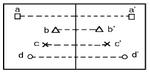
- a
- b
- c
- d
(정답률: 71%)
49. 초점거리 21cm의 카메라로 평균해수면으로부터 800m인 지점을 촬영할 때 촬영한 항공사진의 축척은 얼마인가? (단, 항공기의 높이는 평균해수면으로부터 5000m이다.)
- 1/15,000
- 1/17,000
- 1/20,000
- 1/22,500
(정답률: 15%)
50. 동일 고도에서 보통각과 광각 카메라로 촬영했을 경우 촬영되는 지상면적의 비는 약 얼마인가? (단, 사진의 크기는 동일하고, 보통각카메라의 초점거리는 210mm, 광각카메라 초점거리는 150mm)
- 2 : 3
- 4 : 9
- 1 : 2
- 1 : 4
(정답률: 63%)
51. 항공촬영한 한쌍의 사진을 좌우로 떼어놓고 입체시하는 경우 과고감에 대한 설명으로 맞는 것은?
- 고저를 분별하기 힘들다.
- 수직방향이 수평방향보다 더 과장되어 보인다.
- 수평방향이 수직방향보다 더 과장되어 보인다.
- 실제와 거의 차이가 없다.
(정답률: 70%)
52. 절대표정(또는 대지표정)이 완전히 끝났을 때 사진모델과 실제지형은 다음의 어느 관계가 성립되는가?
- 합동
- 상사
- 상반
- 일치
(정답률: 75%)
53. 사진측량의 표정 중에서 도화기의 투영기에 촬영시와 동일한 광학관계를 갖도록 양화필름을 장착시키는 작업은?
- 내부표정
- 상호표정
- 접합표정
- 절대표정
(정답률: 64%)
54. 카메라의 촬영경사(i)가 2g(그레이드), 초점거리(f)가 153mm로 평탄한 토지를 촬영한 공중사진이 있다. 이 사진에서 주점(m)에서 등각점(j)까지의 거리는?
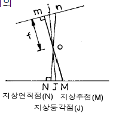
- 1.6mm
- 2.0mm
- 2.4mm
- 4.8mm
(정답률: 37%)
55. 항공사진 촬영에 있어서 일반적으로 비고가 촬영고도의 몇 %를 넘으면 고도를 변경하여 2단 촬영을 하는가?
- 15%
- 20%
- 25%
- 30%
(정답률: 50%)
56. 초점거리 16cm인 사진기로 지면으로부터의 촬영고도 4,000m에서 촬영한 연직사진의 축척은?
- 1/2,500
- 1/4,000
- 1/25,000
- 1/40,000
(정답률: 19%)
57. 원격탐측의 정의로 가장 올바른 것은?
- 지상에서 대상물체에 전파를 발생시켜 그 반사파를 이용하여 관측하는 측량방법이다.
- 센서를 이용하여 지표의 대상물에서 반사 또는 방사되는 전자 스펙트럼을 관측하고 이들의 자료를 이용하여 대상물이나 현상에 관한 정보를 얻는 기법이다.
- 우주에 산재하여 있는 물체들의 고유 스펙트럼을 이용하여 각각의 구성성분을 지상의 레이더망으로 수집처리하는 기법이다.
- 우주에서 찍은 중복된 사진을 이용하여 지상에서 항공사진의 처리와 같은 방법으로 판독하는 작업이다.
(정답률: 55%)
58. 촬영고도 3,000m에서 촬영한 사진 I의 주점기선장(主點基線長)은 59mm, 사진 II의 주점기선장은 61mm 일 때 시차차(視差差) 1.5mm 의 그림자에 의한 고저차(高低差)는 얼마인가?
- 95m
- 85m
- 75m
- 65m
(정답률: 60%)
59. 항공사진은 어떤 투영에 의한 지형 지물의 상인가?
- 중심투영
- 등적투영
- 평행투영
- 정사투영
(정답률: 74%)
60. 동서의 거리가 25km, 남북의 거리가 14km인 사각형의 토지를 초점거리 21cm, 화면크기 18cm× 18cm인 카메라로 축척 1/20,000로 촬영하기 위한 모형의 수는? (단, 촬영코스의 수와 1코스당 사진매수로 구하며 종중복도 60%, 횡중복도 30%로 한다.)
- 약 97매
- 약 108매
- 약 114매
- 약 171매
(정답률: 59%)
4과목: 지리정보시스템
61. 다음 그림은 삼각측량에서의 좌표계산을 위한 것이다. A 점의 좌표(XA, YA)를 알고 C 점의 좌표를 계산하는 식으로 옳은 것은? (단, T는 방향각이고 S는 변장임)
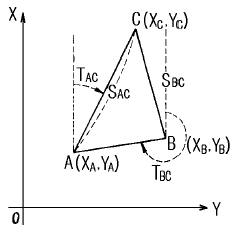
- XC = XA + SAC cos TAC, YC= YA + SAC sin TAC
- XC = XA + SAC sin TAC, YC = YA + SAC cos TAC
- XC = XA - SAC cos TAC, YC = YA - SAC sin TAC
- XC = YA + SAC cos TAC, YC = XA + SAC sin TAC
(정답률: 62%)
62. 삼각망 구성에 있어서 다음 중 가장 정밀도가 높은 삼각망은?
- 유심삼각망
- 사변형 삼각망
- 단열삼각망
- 종합삼각망
(정답률: 70%)
63. 평판측량에서 도상오차의 허용범위를 0.2㎜로 할 때 30㎝의 구심오차를 허용할 수 있는 도면의 축척한계는?
- 1/1,000
- 1/1,200
- 1/1,500
- 1/3,000
(정답률: 22%)
64. 그림에서 단면의 용지 폭(B)은? (단, 여유폭은 1m로 한다.)
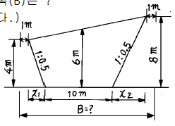
- 18m
- 16m
- 15m
- 12m
(정답률: 60%)
65. 스타디아측량에서 다음과 같은 관측값을 얻었다. B점의 지반고는? (단, 기계점 A의 지반고 100.00m, 연직각 α=-10°, 상시거선 2.78m, 하시거선 1.38m, 기계고 1.50m K=100, C=30cm)
- 123.41m
- 120.41m
- 79.59m
- 75.43m
(정답률: 0%)
66. GPS 측량에 대한 기술 중 맞지 않는 것은?
- 인공위성의 전파를 수신하여 위치를 결정하는 시스템이다.
- 우천시에도 위치 결정이 가능하다.
- 수신점의 높이를 결정하는데 이용될 수 있다.
- 2점이상 관측시 수신점간 시통이 되지 않으면 위치를 결정할 수 없다.
(정답률: 70%)
67. A'점에서 편심관측을 아래 그림과 같이 행하였다. ∠x1, ∠x2는 얼마인가? (단, B:기지점, S1=2000m, S2=1,000m, e=0.1m, T2=120° ,ψ =330° 으로 한다.)
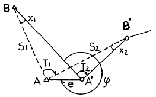
- x1 = 3", x2 = 6"
- x1 = 5", x2 = 10"
- x1 = 10", x2 = 20"
- x1 = 15", x2 = 30"
(정답률: 70%)
68. 두점간의 고저차를 구하기 위하여 경사거리 30.0m± 20cm, 경사각 15° 30'의 값을 얻었다. 경사거리와 경사각이 고저차 결정의 독립변수로 작용할 때 고저차의 오차는?
- ± 5.3cm
- ± 10.5cm
- ± 15.8cm
- ± 27.6cm
(정답률: 8%)
69. 수평각 관측에서 수평축과 시준축이 직교하지 않음으로써 일어나는 각 오차는 어떻게 소거하는가?
- 정· 반위관측
- 반복법관측
- 방향각법 관측
- 조합각관측법
(정답률: 64%)
70. 지형공간정보체계(GSIS)의 자료기반구축에 대한 설명 중 틀린 것은?
- GPS에 의해 측량된 지형정보자료를 이용하여 구축할수 있다.
- SPOT 위성영상에 의해 얻어진 지형정보자료를 이용하여 구축할 수 있다.
- 자료기반구축을 위해 레스터방식과 벡터방식을 이용할 수 있으며 수치지도는 레스터방식에 적합하다.
- 자료기반구축을 위해 각종 도면이나 대장, 보고서 등이 이용된다.
(정답률: 60%)
71. 그림과 같은 삼각형 지역의 체적은 얼마인가? (단, 각 점에 주어진 수치는 지반고이며 m단위이고, 각 변에 주어진 거리는 수평면에 투영된 거리임.)
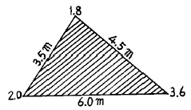
- 151.4m3
- 75.7m3
- 19.3m3
- 12.3m3
(정답률: 67%)
72. 동일각을 측정함에 있어 측정회수를 다르게 적용하여 얻은 결과이다. 최확치는? (단, 42° 28'40"(2회측정), 42° 28'46"(4회측정), 42° 28'48"(6회측정))
- 42° 28'44"
- 42° 28'46"
- 42° 28'48"
- 42° 28'50"
(정답률: 73%)
73. 축척 1/25,000 지형도에서 산 정상에서부터 산 밑까지 도상거리가 80㎜이고 산 정상의 표고는 842m, 산밑의 표고는 342m이었다. 이 때 사면경사는 얼마인가?
- 15%
- 25%
- 35%
- 40%
(정답률: 62%)
74. 트래버스측량에 의하여 가장 정확도가 요구되는 측량에서 사용하여야 할 방법은?
- 기지점으로부터 출발하여 다른 기지점에 결합하는 트래버스
- 임의의 측점에서부터 출발하여 동일 측점으로 되돌아와 폐합하는 트래버스
- 정도가 높은 삼각점에서 출발하는 개방 트래버스
- 임의의 점에서 삼각점에 결합하는 트래버스
(정답률: 67%)
75. 다음 공간자료의 형태에 대한 설명중 틀린 것은?
- 점(占)은 위치 좌표계의 단 하나의 쌍으로 표현되는 대상이다.
- 선(線)은 점이 연결되어 만들어지는 집합이다.
- 면적(面積)은 분리된 단위를 형성하는 것에 가까운 점분할의 집합이다.
- 표면(表面)은 공간적 대상물의 범주로 간주되며 연속적인 자료의 표현이다.
(정답률: 65%)
76. 지형공간정보체계의 적용분야에 따른 명칭약어의 해설로서 합당하지 않은 것은?
- LIS - 토지 및 지적관련 정보 관리
- UIS - 도시관련 정보 관리
- SIS - 공간관련 정보 관리
- AM/FM - 무선 관련 정보 처리
(정답률: 55%)
77. 다음 중 차원이 다른 하나는?
- 선의 특수한 형태로 문자열(String)
- 호(Arc)
- 절점(Node)
- 사슬(Chain)
(정답률: 77%)
78. 그림과 같은 각을 관측한 결과 ∠A=27° 37′ 44″, ∠B=26° 45′ 30″,∠C=54° 23′ 35″이다. 각 A,B,C의 보정치는 얼마인가?
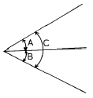
- ∠A=+7″ ,∠B=+7″ ,∠C=-7″
- ∠A=-7″ ,∠B=-7″ ,∠C=+7″
- ∠A=+7″ ,∠B=+7″ ,∠C=+7″
- ∠A=-7″ ,∠B=-7″ ,∠C=-7″
(정답률: 75%)
79. 삼각망을 구성하는데 있어서 내각을 작게 하는 것이 좋지 않은 이유를 가장 잘 설명하는 것은?
- 한 삼각에 있어서 작은 각이 있으면 반드시 다른 각 중에서 큰 각이 있기 때문이다.
- 경도, 위도 또는 좌표계산이 불편하기 때문이다.
- 한 기지변으로부터 타변을 정현비례법칙으로 구할 때 오차가 많이 생기기 때문이다.
- 측각하기가 불편하기 때문이다.
(정답률: 75%)
80. 아래 그림과 같이 4점(P1∼P4)의 표고를 결정하기 위하여 2점의 기지수준점(HA, HB)에 연결하는 8노선(x1∼x8)의 수 준측량을 실시하였다. 이 때 조건식의 수는 몇 개인가?
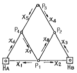
- 5개
- 4개
- 3개
- 2개
(정답률: 70%)
5과목: 측량학
81. 기본측량의 설명으로 잘못된 것은?
- 국토지리정보원장(국립지리원장)은 년간 계획을 수립한다.
- 모든 측량의 기초가 되는 측량이다.
- 건설교통부장관이 실시한다.
- 공공측량의 기준이 된다.
(정답률: 54%)
82. 측량업자인 법인이 파산 또는 합병외의 사유로 해산한 경우 그 청산인은 누구에게 그 사실을 신고하여야 하는가?
- 행정자치부장관
- 시장 또는 군수
- 건설교통부장관
- 시· 도지사
(정답률: 67%)
83. 기본측량과 공공측량에 관한 측량의 기준에서 설명이 잘못된 것은?
- 지리학적 경위도는 세계측지계에 따라 측정한다.
- 위치는 지리학적 경위도와 평균해면으로 부터의 높이로 표시하며 직각좌표는 사용되나 극좌표의 사용은 금한다.
- 거리와 면적은 회전타원체면상의 값으로 표시한다.
- 측량의 원점은 대한민국경위도원점 및 수준원점으로한다. 단, 특별한 사유가 있어서 국토지리정보원장 (국립지리원장)의 승인을 받을때는 그러하지 아니한다.
(정답률: 42%)
84. 심사를 받지않고 지도등을 발매 또는 배포한 자에 대한 벌칙으로 옳은 것은?
- 2년이하의 징역 또는 500만원이하의 벌금에 처한다.
- 1년이하의 징역 또는 300만원이하의 벌금에 처한다.
- 200만원이하의 과태료에 처한다.
- 200만원이하의 벌금에 처한다.
(정답률: 50%)
85. 인공위성 등에서 취득한 영상정보에 좌표를 부여하기 위한 2차원 또는 3차원 좌표측량 등을 업무내용으로 하는 측량업은?
- 공공측량업
- 항공사진도화업
- 수치지도제작업
- 지도제작업
(정답률: 65%)
86. 국토지리정보원장(국립지리원장)이 간행하는 지도의 축척이 아닌 것은?
- 1:500
- 1:5,000
- 1:50,000
- 1:1,000,000
(정답률: 77%)
87. 측량기기의 성능검사대행자는 등록사항에 변경이 있을 경우 변경등록 및 변경신고를 하여야 한다. 다음중 변경등록을 하여야 하는 사항으로 틀린 것은?
- 검사시설 또는 검사장비의 변경
- 기술능력의 변경
- 주된 영업소의 소재지의 변경
- 대표자의 변경
(정답률: 75%)
88. 다음 측량 심의회에 관한 사항중 옳은 것은?
- 위원장은 건설교통부장관이 임명한다.
- 심의회는 위원장 1인을 포함한 20인 이상의 위원으로 구성한다.
- 보궐위원의 임기는 전임자의 잔임기간으로 한다.
- 공무원이 아닌 위원의 임기는 3년으로 한다.
(정답률: 55%)
89. 기본측량의 실시에 관한 설명으로 잘못된 것은?
- 기본측량을 실시하기 위하여 필요하다고 인정하는 경우에는 토지, 건물, 죽목을 수용하거나 사용할 수 있다.
- 국토지리정보원장(국립지리원장)은 기본측량실시로 인하여 손실을 받은 자가 있을 때에는 그 손실을 보상 하여야 한다.
- 타인의 토지나 건물에 출입하고자 하는 자는 그 권한을 표시하는 증표를 지니고 관계인에게 제시하여야한다.
- 기본측량을 위하여 토지등에 출입할수 있는 권한을 표시하는 증표에 관하여 필요한 사항은 대통령령으로 정한다.
(정답률: 75%)
90. 다음 중 지명고시 사항에 포함되지 아니하는 것은?
- 제정 또는 변경된 지명
- 제· 개정된 연월일
- 소재지(행정구역으로 표시)
- 위치(경도 및 위도로 표시)
(정답률: 73%)
91. 다음 중 측량업의 종류에 해당하지 않는것은?
- 지하시설물측량업
- 측지측량업
- 항공사진촬영업
- 지도판매업
(정답률: 80%)
92. 측량협회에 대한 설명으로 잘못된 것은?
- 협회는 법인으로 한다.
- 측량업자 및 측량기술자는 그들의 품위보전등을 위하여 측량협회를 설립할 수 있다.
- 업무구역을 전국으로 하되, 전체 시· 군· 구의 3분의 2이상에 사무소를 두고 있어야 한다.
- 협회는 그 주된 사무소의 소재지에서 설립등기를 함으로써 성립한다.
(정답률: 67%)
93. 공공측량의 성과와 기록의 보관권자는?
- 건설교통부장관
- 공공측량의 계획기관
- 공공측량의 작업기관
- 시·도지사
(정답률: 70%)
94. 측량기술자의 자격기준에서 석사학위를 가진 자로서 3년이상 측량업무를 수행한 학력· 경력자의 기술 등급은?
- 고급기술자
- 중급기술자
- 특급기술자
- 초급기술자
(정답률: 65%)
95. 다음 중 공공측량에 속하는 것은?
- 기본측량 외의 측량 중 지방자치 단체가 실시하는 측량
- 수로업무에 의한 수로측량
- 지적법에 의한 지적측량
- 국지적측량 및 고도의 정확도를 필요로 하지 아니하는 측량으로서 건설교통부장관이 정하여 고시하는 측량
(정답률: 38%)
96. 다음중 관할구역의 일시표지의 현황을 조사하는 자는?
- 군수
- 국토지리정보원장(국립지리원장)
- 경찰서장
- 국토관리청장
(정답률: 67%)
97. 기본측량을 위한 의무집행에 대해 정당한 사유없이 토지·죽목·건물 기타 공작물의 일시사용을 거부하거나 방해한자에 대한 벌칙은?
- 200만원이하의 벌금에 처한다.
- 200만원이하의 과태료에 처한다.
- 1년이하의 징역 또는 300만원 이하의 벌금에 처한다.
- 2년이하의 징역 또는 500만원 이하의 벌금에 처한다.
(정답률: 70%)
98. 1:5,000 지형도상 외도곽과 내도곽 사이에 표시할 사항이 아닌 것은?
- 행선지명
- 도달거리
- 범례
- 좌표수치
(정답률: 62%)
99. 측량법에서 규정하는 수치주제도로 볼 수 없는 것은?
- 지하시설물도
- 수치지적도
- 행정구역도
- 토지피복지도
(정답률: 59%)
100. 공공측량에 있어서 직각좌표 기준의 명칭 및 적용범위가 틀린 것은?
- 동부좌표계:적용구역 동경122도 ∼ 124도
- 서부좌표계:적용구역 동경124도 ∼ 126도
- 동해좌표계:적용구역 동경130도 ∼ 132도
- 중부좌표계:적용구역 동경126도 ∼ 128도
(정답률: 70%)
(6377.397-6356.079)/6377.397 ≈ 0.0033
즉, 지구의 편평률은 약 0.0033이다. 이 값을 역수로 취하면 약 1/299가 된다. 이 값은 지구가 약간 납작한 형태를 가지고 있다는 것을 나타내며, 지구의 극지방과 적도 부근의 거리가 약간 차이가 나는 것과 관련이 있다.